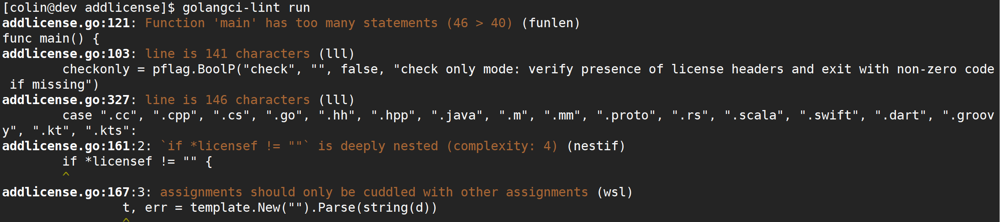
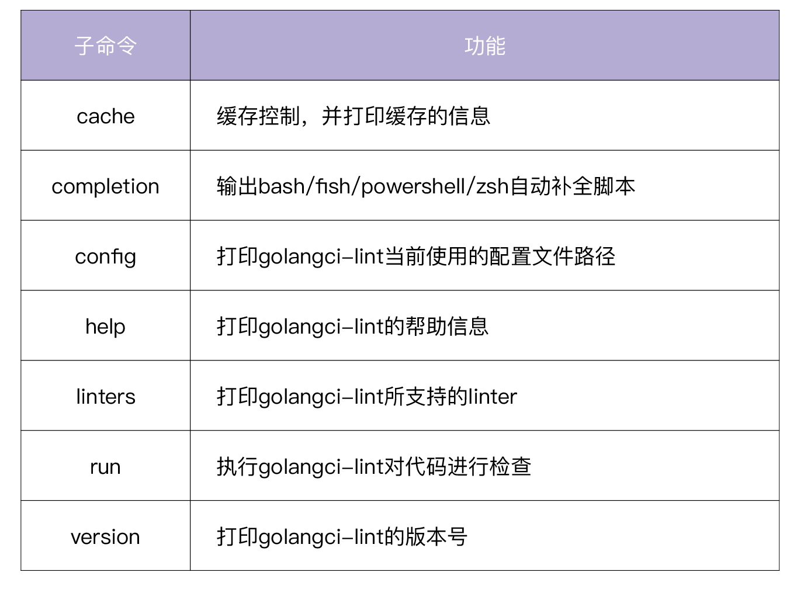
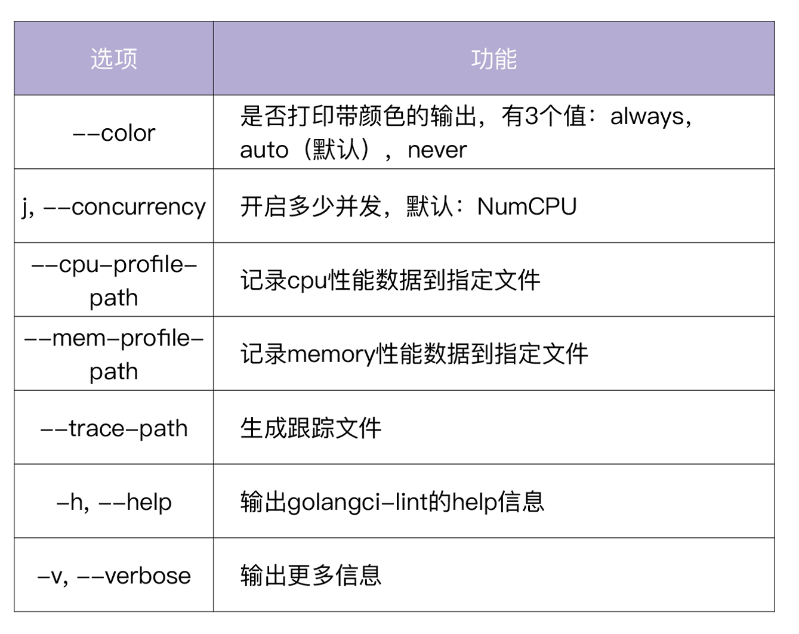
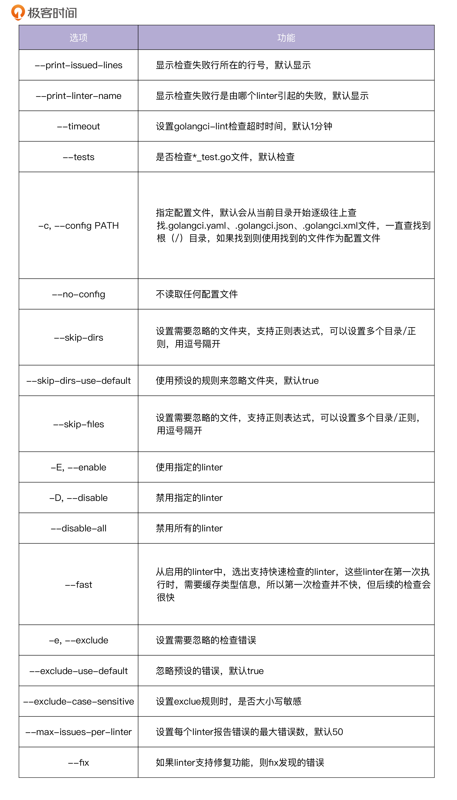

- 00 开篇词 从 0 开始搭建一个企业级 Go 应用.md.html
- 01 IAM系统概述：我们要实现什么样的 Go 项目？.md.html
- 02 环境准备：如何安装和配置一个基本的 Go 开发环境？.md.html
- 03 项目部署：如何快速部署 IAM 系统？.md.html
- 04 规范设计（上）：项目开发杂乱无章，如何规范？.md.html
- 05 规范设计（下）：commit 信息风格迥异、难以阅读，如何规范？.md.html
- 06 目录结构设计：如何组织一个可维护、可扩展的代码目录？.md.html
- 07 工作流设计：如何设计合理的多人开发模式？.md.html
- 08 研发流程设计（上）：如何设计 Go 项目的开发流程？.md.html
- 09 研发流程设计（下）：如何管理应用的生命周期？.md.html
- 10 设计方法：怎么写出优雅的 Go 项目？.md.html
- 11 设计模式：Go常用设计模式概述.md.html
- 12 API 风格（上）：如何设计RESTful API？.md.html
- 13 API 风格（下）：RPC API介绍.md.html
- 14 项目管理：如何编写高质量的Makefile？.md.html
- 15 研发流程实战：IAM项目是如何进行研发流程管理的？.md.html
- 16 代码检查：如何进行静态代码检查？.md.html
- 17 API 文档：如何生成 Swagger API 文档 ？.md.html
- 18 错误处理（上）：如何设计一套科学的错误码？.md.html
- 19 错误处理（下）：如何设计错误包？.md.html
- 20 日志处理（上）：如何设计日志包并记录日志？.md.html
- 21 日志处理（下）：手把手教你从 0 编写一个日志包.md.html
- 22 应用构建三剑客：Pflag、Viper、Cobra 核心功能介绍.md.html
- 23 应用构建实战：如何构建一个优秀的企业应用框架？.md.html
- 24 Web 服务：Web 服务核心功能有哪些，如何实现？.md.html
- 25 认证机制：应用程序如何进行访问认证？.md.html
- 26 IAM项目是如何设计和实现访问认证功能的？.md.html
- 27 权限模型：5大权限模型是如何进行资源授权的？.md.html
- 28 控制流（上）：通过iam-apiserver设计，看Web服务的构建.md.html
- 29 控制流（下）：iam-apiserver服务核心功能实现讲解.md.html
- 30 ORM：CURD 神器 GORM 包介绍及实战.md.html
- 31 数据流：通过iam-authz-server设计，看数据流服务的设计.md.html
- 32 数据处理：如何高效处理应用程序产生的数据？.md.html
- 33 SDK 设计（上）：如何设计出一个优秀的 Go SDK？.md.html
- 34 SDK 设计（下）：IAM项目Go SDK设计和实现.md.html
- 35 效率神器：如何设计和实现一个命令行客户端工具？.md.html
- 36 代码测试（上）：如何编写 Go 语言单元测试和性能测试用例？.md.html
- 37 代码测试（下）：Go 语言其他测试类型及 IAM 测试介绍.md.html
- 38 性能分析（上）：如何分析 Go 语言代码的性能？.md.html
- 39 性能分析（下）：API Server性能测试和调优实战.md.html
- 40 软件部署实战（上）：部署方案及负载均衡、高可用组件介绍.md.html
- 41 软件部署实战（中）：IAM 系统生产环境部署实战.md.html
- 42 软件部署实战（下）：IAM系统安全加固、水平扩缩容实战.md.html
- 43 技术演进（上）：虚拟化技术演进之路.md.html
- 44 技术演进（下）：软件架构和应用生命周期技术演进之路.md.html
- 45 基于Kubernetes的云原生架构设计.md.html
- 46 如何制作Docker镜像？.md.html
- 47 如何编写Kubernetes资源定义文件？.md.html
- 48 IAM 容器化部署实战.md.html
- 49 服务编排（上）：Helm服务编排基础知识.md.html
- 50 服务编排（下）：基于Helm的服务编排部署实战.md.html
- 51 基于 GitHub Actions 的 CI 实战.md.html
- 特别放送 Go Modules依赖包管理全讲.md.html
- 特别放送 Go Modules实战.md.html
- 特别放送 IAM排障指南.md.html
- 特别放送 分布式作业系统设计和实现.md.html
- 特别放送 给你一份Go项目中最常用的Makefile核心语法.md.html
- 特别放送 给你一份清晰、可直接套用的Go编码规范.md.html
- 直播加餐 如何从小白进阶成 Go 语言专家？.md.html
- 结束语 如何让自己的 Go 研发之路走得更远？.md.html
- 捐赠
16 代码检查：如何进行静态代码检查？
你好，我是孔令飞。上一讲中，我在讲代码开发的具体步骤时，提到了静态代码检查，今天我就来详细讲讲如何执行静态代码检查。
在做Go项目开发的过程中，我们肯定需要对Go代码做静态代码检查。虽然Go命令提供了go vet和go tool vet，但是它们检查的内容还不够全面，我们需要一种更加强大的静态代码检查工具。
其实，Go生态中有很多这样的工具，也不乏一些比较优秀的。今天我想给你介绍的golangci-lint，是目前使用最多，也最受欢迎的静态代码检查工具，我们的IAM实战项目也用到了它。
接下来，我就从golangci-lint的优点、golangci-lint提供的命令和选项、golangci-lint的配置这三个方面来向你介绍下它。在你了解这些基础知识后，我会带着你使用golangci-lint进行静态代码检查，让你熟悉操作，在这个基础上，再把我使用golangci-lint时总结的一些经验技巧分享给你。
为什么选择golangci-lint做静态代码检查？
选择golangci-lint，是因为它具有其他静态代码检查工具不具备的一些优点。在我看来，它的核心优点至少有这些：
- 速度非常快：golangci-lint是基于gometalinter开发的，但是平均速度要比gometalinter快5倍。golangci-lint速度快的原因有三个：可以并行检查代码；可以复用go build缓存；会缓存分析结果。
- 可配置：支持YAML格式的配置文件，让检查更灵活，更可控。
- IDE集成：可以集成进多个主流的IDE，例如 VS Code、GNU Emacs、Sublime Text、Goland等。
- linter聚合器：1.41.1版本的golangci-lint集成了76个linter，不需要再单独安装这76个linter。并且golangci-lint还支持自定义linter。
- 最小的误报数：golangci-lint调整了所集成linter的默认设置，大幅度减少了误报。
- 良好的输出：输出的结果带有颜色、代码行号和linter标识，易于查看和定位。
下图是一个golangci-lint的检查结果：

你可以看到，输出的检查结果中包括如下信息：
- 检查出问题的源码文件、行号和错误行内容。
- 出问题的原因，也就是打印出不符合检查规则的原因。
- 报错的linter。
通过查看golangci-lint的输出结果，可以准确地定位到报错的位置，快速弄明白报错的原因，方便开发者修复。
除了上述优点之外，在我看来golangci-lint还有一个非常大的优点：当前更新迭代速度很快，不断有新的linter被集成到golangci-lint中。有这么全的linter为你的代码保驾护航，你在交付代码时肯定会更有自信。
目前，有很多公司/项目使用了golangci-lint工具作为静态代码检查工具，例如 Google、Facebook、Istio、Red Hat OpenShift等。
golangci-lint提供了哪些命令和选项？
在使用之前，首先需要安装golangci-lint。golangci-lint的安装方法也很简单，你只需要执行以下命令，就可以安装了。
$ go get github.com/golangci/golangci-lint/cmd/[email protected]
$ golangci-lint version # 输出 golangci-lint 版本号，说明安装成功
golangci-lint has version v1.39.0 built from (unknown, mod sum: "h1:aAUjdBxARwkGLd5PU0vKuym281f2rFOyqh3GB4nXcq8=") on (unknown)
这里注意，为了避免安装失败，强烈建议你安装golangci-lint releases page中的指定版本，例如 v1.41.1。
另外，还建议你定期更新 golangci-lint 的版本，因为该项目正在被积极开发并不断改进。
安装之后，就可以使用了。我们可以通过执行 golangci-lint -h 查看其用法，golangci-lint支持的子命令见下表：

此外，golangci-lint还支持一些全局选项。全局选项是指适用于所有子命令的选项，golangci-lint支持的全局选项如下：

接下来，我就详细介绍下golangci-lint支持的核心子命令：run、cache、completion、config、linters。
run命令
run命令执行golangci-lint，对代码进行检查，是golangci-lint最为核心的一个命令。run没有子命令，但有很多选项。run命令的具体使用方法，我会在讲解如何执行静态代码检查的时候详细介绍。
cache命令
cache命令用来进行缓存控制，并打印缓存的信息。它包含两个子命令：
- clean用来清除cache，当我们觉得cache的内容异常，或者cache占用空间过大时，可以通过
golangci-lint cache clean清除cache。 - status用来打印cache的状态，比如cache的存放目录和cache的大小，例如：
$ golangci-lint cache status
Dir: /home/colin/.cache/golangci-lint
Size: 773.4KiB
completion命令
completion命令包含4个子命令bash、fish、powershell和zsh，分别用来输出bash、fish、powershell和zsh的自动补全脚本。
下面是一个配置bash自动补全的示例：
$ golangci-lint completion bash > ~/.golangci-lint.bash
$ echo "source '$HOME/.golangci-lint.bash'" >> ~/.bashrc
$ source ~/.bashrc
执行完上面的命令，键入如下命令，即可自动补全子命令：
$ golangci-lint comp<TAB>
上面的命令行会自动补全为golangci-lint completion 。
config命令
config命令可以打印golangci-lint当前使用的配置文件路径，例如：
$ golangci-lint config path
.golangci.yaml
linters命令
linters命令可以打印出golangci-lint所支持的linter，并将这些linter分成两类，分别是配置为启用的linter和配置为禁用的linter，例如：
$ golangci-lint linters
Enabled by your configuration linters:
...
deadcode: Finds unused code [fast: true, auto-fix: false]
...
Disabled by your configuration linters:
exportloopref: checks for pointers to enclosing loop variables [fast: true, auto-fix: false]
...
上面我介绍了golangci-lint提供的命令，接下来，我们再来看下golangci-lint的配置。
golangci-lint配置
和其他linter相比，golangci-lint一个非常大的优点是使用起来非常灵活，这要得益于它对自定义配置的支持。
golangci-lint支持两种配置方式，分别是命令行选项和配置文件。如果bool/string/int的选项同时在命令行选项和配置文件中被指定，命令行的选项就会覆盖配置文件中的选项。如果是slice类型的选项，则命令行和配置中的配置会进行合并。
golangci-lint run 支持很多命令行选项，可通过golangci-lint run -h查看，这里选择一些比较重要的选项进行介绍，见下表：

此外，我们还可以通过golangci-lint配置文件进行配置，默认的配置文件名为.golangci.yaml、.golangci.toml、.golangci.json，可以通过-c选项指定配置文件名。通过配置文件，可以实现下面几类功能：
- golangci-lint本身的一些选项，比如超时、并发，是否检查
*_test.go文件等。 - 配置需要忽略的文件和文件夹。
- 配置启用哪些linter，禁用哪些linter。
- 配置输出格式。
- golangci-lint支持很多linter，其中有些linter支持一些配置项，这些配置项可以在配置文件中配置。
- 配置符合指定正则规则的文件可以忽略的linter。
- 设置错误严重级别，像日志一样，检查错误也是有严重级别的。
更详细的配置内容，你可以参考Configuration。另外，你也可以参考IAM项目的golangci-lint配置.golangci.yaml。.golangci.yaml里面的一些配置，我建议你一定要设置，具体如下：
run:
skip-dirs: # 设置要忽略的目录
- util
- .*~
- api/swagger/docs
skip-files: # 设置不需要检查的go源码文件，支持正则匹配，这里建议包括：_test.go
- ".*\\.my\\.go$"
- _test.go
linters-settings:
errcheck:
check-type-assertions: true # 这里建议设置为true，如果确实不需要检查，可以写成`num, _ := strconv.Atoi(numStr)`
check-blank: false
gci:
# 将以`github.com/marmotedu/iam`开头的包放在第三方包后面
local-prefixes: github.com/marmotedu/iam
godox:
keywords: # 建议设置为BUG、FIXME、OPTIMIZE、HACK
- BUG
- FIXME
- OPTIMIZE
- HACK
goimports:
# 设置哪些包放在第三方包后面，可以设置多个包，逗号隔开
local-prefixes: github.com/marmotedu/iam
gomoddirectives: # 设置允许在go.mod中replace的包
replace-local: true
replace-allow-list:
- github.com/coreos/etcd
- google.golang.org/grpc
- github.com/marmotedu/api
- github.com/marmotedu/component-base
- github.com/marmotedu/marmotedu-sdk-go
gomodguard: # 下面是根据需要选择可以使用的包和版本，建议设置
allowed:
modules:
- gorm.io/gorm
- gorm.io/driver/mysql
- k8s.io/klog
domains: # List of allowed module domains
- google.golang.org
- gopkg.in
- golang.org
- github.com
- go.uber.org
blocked:
modules:
- github.com/pkg/errors:
recommendations:
- github.com/marmotedu/errors
reason: "`github.com/marmotedu/errors` is the log package used by marmotedu projects."
versions:
- github.com/MakeNowJust/heredoc:
version: "> 2.0.9"
reason: "use the latest version"
local_replace_directives: false
lll:
line-length: 240 # 这里可以设置为240，240一般是够用的
importas: # 设置包的alias，根据需要设置
jwt: github.com/appleboy/gin-jwt/v2
metav1: github.com/marmotedu/component-base/pkg/meta/v1
需要注意的是，golangci-lint不建议使用 enable-all: true 选项，为了尽可能使用最全的linters，我们可以使用以下配置：
linters:
disable-all: true
enable: # enable下列出 <期望的所有linters>
- typecheck
- ...
<期望的所有linters> = <golangci-lint支持的所有linters> - <不期望执行的linters>，我们可以通过执行以下命令来获取：
$ ./scripts/print_enable_linters.sh
- asciicheck
- bodyclose
- cyclop
- deadcode
- ...
将以上输出结果替换掉.golangci.yaml配置文件中的 linters.enable 部分即可。
上面我们介绍了与golangci-lint相关的一些基础知识，接下来我就给你详细展示下，如何使用golangci-lint进行静态代码检查。
如何使用golangci-lint进行静态代码检查？
要对代码进行静态检查，只需要执行 golangci-lint run 命令即可。接下来，我会先给你介绍5种常见的golangci-lint使用方法。
- 对当前目录及子目录下的所有Go文件进行静态代码检查：
$ golangci-lint run
命令等效于golangci-lint run ./...。
- 对指定的Go文件或者指定目录下的Go文件进行静态代码检查：
$ golangci-lint run dir1 dir2/... dir3/file1.go
这里需要你注意：上述命令不会检查dir1下子目录的Go文件，如果想递归地检查一个目录，需要在目录后面追加/...，例如：dir2/...。
- 根据指定配置文件，进行静态代码检查：
$ golangci-lint run -c .golangci.yaml ./...
- 运行指定的linter：
golangci-lint可以在不指定任何配置文件的情况下运行，这会运行默认启用的linter，你可以通过golangci-lint help linters查看它。
你可以传入参数-E/--enable来使某个linter可用，也可以使用-D/--disable参数来使某个linter不可用。下面的示例仅仅启用了errcheck linter：
$ golangci-lint run --no-config --disable-all -E errcheck ./...
这里你需要注意，默认情况下，golangci-lint会从当前目录一层层往上寻找配置文件名.golangci.yaml、.golangci.toml、.golangci.json直到根（/）目录。如果找到，就以找到的配置文件作为本次运行的配置文件，所以为了防止读取到未知的配置文件，可以用 --no-config 参数使golangci-lint不读取任何配置文件。
- 禁止运行指定的liner：
如果我们想禁用某些linter，可以使用-D选项。
$ golangci-lint run --no-config -D godot,errcheck
在使用golangci-lint进行代码检查时，可能会有很多误报。所谓的误报，其实是我们希望golangci-lint的一些linter能够容忍某些issue。那么如何尽可能减少误报呢？golangci-lint也提供了一些途径，我建议你使用下面这三种：
- 在命令行中添加
-e参数，或者在配置文件的issues.exclude部分设置要排除的检查错误。你也可以使用issues.exclude-rules来配置哪些文件忽略哪些linter。 - 通过
run.skip-dirs、run.skip-files或者issues.exclude-rules配置项，来忽略指定目录下的所有Go文件，或者指定的Go文件。 - 通过在Go源码文件中添加
//nolint注释，来忽略指定的代码行。
因为golangci-lint设置了很多linters，对于一个大型项目，启用所有的linter会检查出很多问题，并且每个项目对linter检查的粒度要求也不一样，所以glangci-lint使用nolint标记来开关某些检查项，不同位置的nolint标记效果也会不一样。接下来我想向你介绍nolint的几种用法。
- 忽略某一行所有linter的检查
var bad_name int //nolint
- 忽略某一行指定linter的检查，可以指定多个linter，用逗号
,隔开。
var bad_name int //nolint:golint,unused
- 忽略某个代码块的检查。
//nolint
func allIssuesInThisFunctionAreExcluded() *string {
// ...
}
//nolint:govet
var (
a int
b int
)
- 忽略某个文件的指定linter检查。
在package xx 上面一行添加//nolint注释。
//nolint:unparam
package pkg
...
在使用nolint的过程中，有3个地方需要你注意。
首先，如果启用了nolintlint，你就需要在//nolint后面添加nolint的原因// xxxx。
其次，你使用的应该是//nolint而不是// nolint。因为根据Go的规范，需要程序读取的注释//后面不应该有空格。
最后，如果要忽略所有linter，可以用//nolint；如果要忽略某个指定的linter，可以用//nolint:<linter1>,<linter2>。
golangci-lint使用技巧
我在使用golangci-lint时，总结了一些经验技巧，放在这里供你参考，希望能够帮助你更好地使用golangci-lint。
技巧1：第一次修改，可以按目录修改。
如果你第一次使用golangci-lint检查你的代码，一定会有很多错误。为了减轻修改的压力，可以按目录检查代码并修改。这样可以有效减少失败条数，减轻修改压力。
当然，如果错误太多，一时半会儿改不完，想以后慢慢修改或者干脆不修复存量的issues，那么你可以使用golangci-lint的 --new-from-rev 选项，只检查新增的code，例如：
$ golangci-lint run --new-from-rev=HEAD~1
技巧2：按文件修改，减少文件切换次数，提高修改效率。
如果有很多检查错误，涉及很多文件，建议先修改一个文件，这样就不用来回切换文件。可以通过grep过滤出某个文件的检查失败项，例如：
$ golangci-lint run ./...|grep pkg/storage/redis_cluster.go
pkg/storage/redis_cluster.go:16:2: "github.com/go-redis/redis/v7" imported but not used (typecheck)
pkg/storage/redis_cluster.go:82:28: undeclared name: `redis` (typecheck)
pkg/storage/redis_cluster.go:86:14: undeclared name: `redis` (typecheck)
...
技巧3：把linters-setting.lll.line-length设置得大一些。
在Go项目开发中，为了易于阅读代码，通常会将变量名/函数/常量等命名得有意义，这样很可能导致每行的代码长度过长，很容易超过lll linter设置的默认最大长度80。这里建议将linters-setting.lll.line-length设置为120/240。
技巧4：尽可能多地使用golangci-lint提供的linter。
golangci-lint集成了很多linters，可以通过如下命令查看：
$ golangci-lint linters
Enabled by your configuration linters:
deadcode: Finds unused code [fast: true, auto-fix: false]
...
varcheck: Finds unused global variables and constants [fast: true, auto-fix: false]
Disabled by your configuration linters:
asciicheck: Simple linter to check that your code does not contain non-ASCII identifiers [fast: true, auto-fix: false]
...
wsl: Whitespace Linter - Forces you to use empty lines! [fast: true, auto-fix: false]
这些linter分为两类，一类是默认启用的，另一类是默认禁用的。每个linter都有两个属性：
- fast：true/false，如果为true，说明该linter可以缓存类型信息，支持快速检查。因为第一次缓存了这些信息，所以后续的运行会非常快。
- auto-fix：true/false，如果为true说明该linter支持自动修复发现的错误；如果为false说明不支持自动修复。
如果配置了golangci-lint配置文件，则可以通过命令golangci-lint help linters查看在当前配置下启用和禁用了哪些linter。golangci-lint也支持自定义linter插件，具体你可以参考：New linters。
在使用golangci-lint的时候，我们要尽可能多的使用linter。使用的linter越多，说明检查越严格，意味着代码越规范，质量越高。如果时间和精力允许，建议打开golangci-lint提供的所有linter。
技巧5：每次修改代码后，都要执行golangci-lint。
每次修改完代码后都要执行golangci-lint，一方面可以及时修改不规范的地方，另一方面可以减少错误堆积，减轻后面的修改压力。
技巧6：建议在根目录下放一个通用的golangci-lint配置文件。
在/目录下存放通用的golangci-lint配置文件，可以让你不用为每一个项目都配置golangci-lint。当你需要为某个项目单独配置golangci-lint时，只需在该项目根目录下增加一个项目级别的golangci-lint配置文件即可。
总结
Go项目开发中，对代码进行静态代码检查是必要的操作。当前有很多优秀的静态代码检查工具，但golangci-lint因为具有检查速度快、可配置、少误报、内置了大量linter等优点，成为了目前最受欢迎的静态代码检查工具。
golangci-lint功能非常强大，支持诸如run、cache、completion、linters等命令。其中最常用的是run命令，run命令可以通过以下方式来进行静态代码检查：
$ golangci-lint run # 对当前目录及子目录下的所有Go文件进行静态代码检查
$ golangci-lint run dir1 dir2/... dir3/file1.go # 对指定的Go文件或者指定目录下的Go文件进行静态代码检查
$ golangci-lint run -c .golangci.yaml ./... # 根据指定配置文件，进行静态代码检查
$ golangci-lint run --no-config --disable-all -E errcheck ./... # 运行指定的 errcheck linter
$ golangci-lint run --no-config -D godot,errcheck # 禁止运行指定的godot,errcheck liner
此外，golangci-lint还支持 //nolint 、//nolint:golint,unused 等方式来减少误报。
最后，我分享了一些自己使用golangci-lint时总结的经验。例如：第一次修改，可以按目录修改；按文件修改，减少文件切换次数，提高修改效率；尽可能多地使用golangci-lint提供的linter。希望这些建议对你使用golangci-lint有一定帮助。
课后练习
- 执行
golangci-lint linters命令，查看golangci-lint支持哪些linter，以及这些linter的作用。 - 思考下，如何在golangci-lint中集成自定义的linter。
如果遇到任何疑问，欢迎你在留言区与我交流讨论，我们下一讲见。
© 2019 - 2023 Liangliang Lee. Powered by gin and hexo-theme-book.